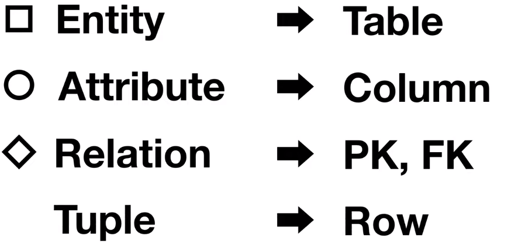

This is personal study note
Copyright and original reference:
https://www.youtube.com/watch?v=E6LbuLoU6rc&list=PLuHgQVnccGMDF6rHsY9qMuJMd295Yk4sa
================================================================================
"Concept" which is found from real world project by using "conceptual data modeling"
are called "entity"
table=physical_modeling(entity)
================================================================================
글 entity = 제목 (attribute1), 본문 (attribute2), 생성일 (attribute3)
columns=physical_modeling(attribute1,attribute2,attribute3)
================================================================================
Analogy:
- Entity: directories (which can have subdirectory, and which contains relevant files)
- Attributte: files
================================================================================
Relationship between entities
================================================================================
In logical data modeling, relationships are represented by "PK, FK" and tables are concatenated by using "Join"
================================================================================
